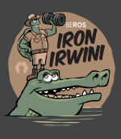

分发版本
什么是分发版本？
ROS分发版本是一组带有版本号的ROS软件包。它们类似于Linux分发版本（例如Ubuntu）。ROS分发版本的目的是让开发者在相对稳定的代码库上进行工作，直到他们准备好推进所有内容。因此，一旦发布了一个分发版本，我们会尽量限制对核心软件包（ros-desktop-full下的所有内容）进行错误修复和非破坏性改进。这通常适用于整个社区，但对于"更高级"的软件包，规则不那么严格，因此由给定软件包的维护者来避免破坏性变更。
分发版本列表
下面是当前和历史的ROS 2分发版本列表。表格中标记为绿色的行是目前支持的分发版本。
发行版 |
发布日期 |
标志 |
EOL日期 |
|---|---|---|---|
2023年5月23日 |
 |
2024年11月 |
|
2022年5月23日 |
2027年5月 |
||
银河巨龟 |
2021年5月23日 |
2022年12月9日 |
|
2020年6月5日 |
|
2023年5月 |
|
2019年11月22日 |
2020年11月 |
||
2019年5月31日 |
2021年5月 |
||
2018年12月14日 |
2019年12月 |
||
2018年7月2日 |
|
2019年7月 |
|
2017年12月8日 |
|
2018年12月 |
|
2017年9月13日 |
2017年12月 |
||
2017年7月5日 |
2017年9月 |
||
2016年12月19日 |
2017年7月 |
||
2015年8月31日 |
2016年12月 |


未来的发行版本
有关即将推出功能的详细信息，请参阅：路线图。
每年5月23日（世界海龟日）都会发布一个新的ROS 2发行版。
发行版 |
发布日期 |
标志 |
EOL日期 |
|---|---|---|---|
2024年5月 |
待定 |
2029年5月 |
滚动发布
:doc:`ROS 2 Rolling Ridley <Releases/Release-Rolling-Ridley>`是ROS 2的滚动开发分发版本。它在`REP 2002 <https://www.ros.org/reps/rep-2002.html>`_中有所描述，并于2020年6月首次引入。
ROS 2的Rolling分发版本具有两个目的：
它是ROS 2未来稳定版本的暂存区，并且
它是最新开发版本的集合。
顾名思义，Rolling持续更新，并且**可能包含破坏性更新**。我们建议大多数人使用最新的稳定发行版而不是Rolling（请参阅：分发版本列表）。
发布到Rolling发行版的软件包将自动发布到ROS 2未来的稳定发行版中。:doc:`将ROS 2软件包发布到Rolling发行版 <../How-To-Guides/Releasing/Releasing-a-Package>`遵循与所有其他ROS 2发行版相同的流程。